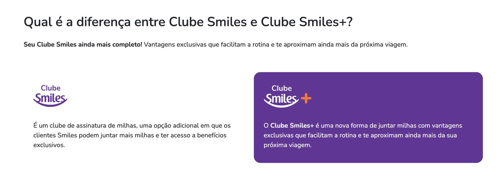
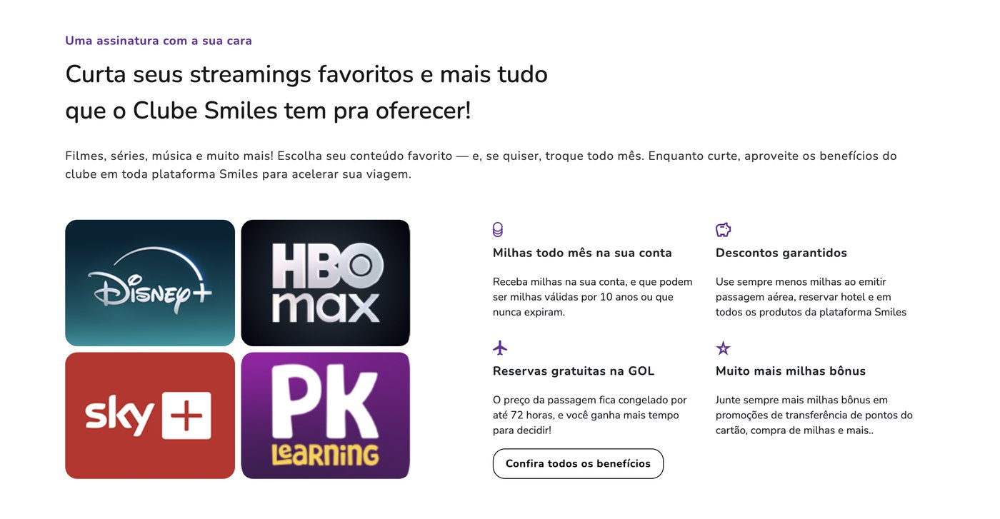
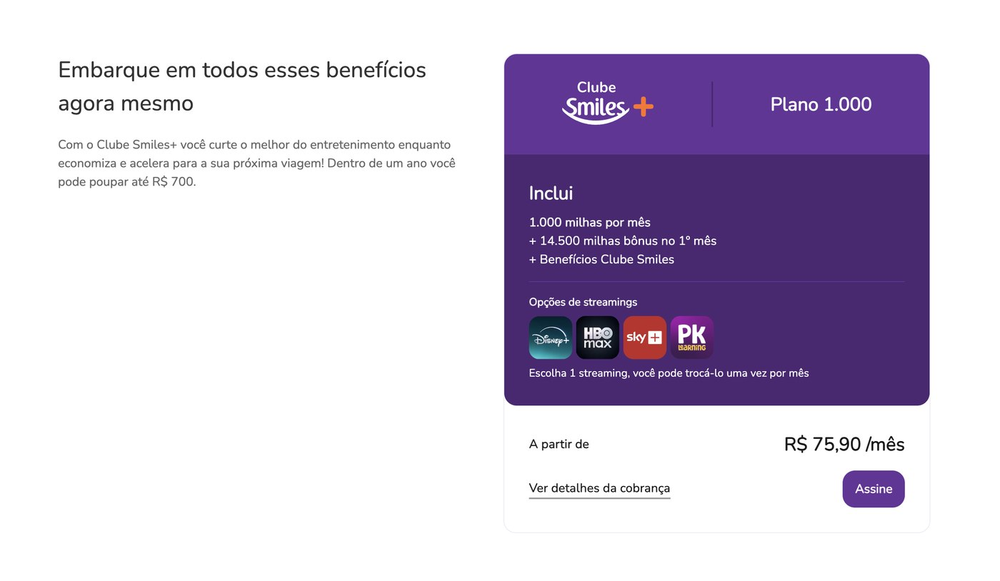
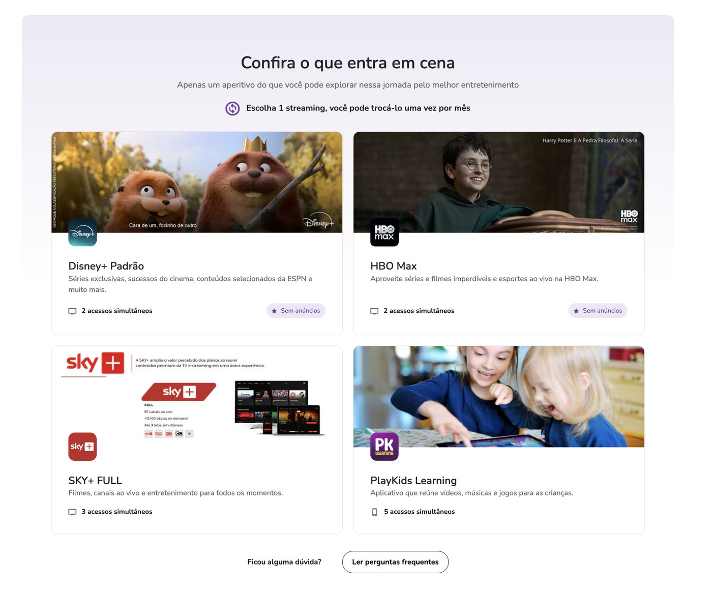

Project 03 · Loyalty program · 0 to 1
Gol: Clube Smiles+
Clube Smiles+ is a brand new product inside Gol's loyalty ecosystem: a streaming add-on bundled with the Clube Smiles subscription. I was the Product Designer responsible for designing it end to end, from information architecture to the ongoing subscriber experience, inside a project with unusually rigid business and content constraints.
Section
Context
A new product that had to feel familiar on day one.
Clube Smiles is a long-standing miles subscription with millions of members. Clube Smiles+ is not a redesign of that product, it is a new one built on top of it: for a slightly higher monthly fee, subscribers get their usual mileage benefits plus a streaming service of their choice (Disney+, HBO Max, SKY+ or PlayKids), with the option to switch once a month.
That framing, an addition, not a replacement, was the single most important design constraint of the whole project. Every screen had to make it obvious that Clube Smiles+ builds on top of Clube Smiles, never competes with it or confuses an existing member about what they are already paying for.

Section
Process and constraints
Designing inside three sets of rules at once.
I followed a human-centered design process close to what ISO 9241-210 describes: understand the context of use, specify requirements with stakeholders, produce design solutions, and evaluate them against real constraints, cycling back whenever a rule or a partner requirement changed the problem. In practice, that meant working inside three layers of constraint that rarely show up together on the same project.
This was a new product, not a new visual language. Every component, spacing token and interaction pattern had to come from the existing design system, in line with Nielsen's consistency and standards heuristic, so a Clube Smiles+ screen never felt like a separate app bolted onto Smiles.
The billing logic (pro-rated first invoice, once-a-month streaming swap, plan tiers) came with little room to negotiate. My job was to translate rules written for finance and legal into interface states and copy that a subscriber could understand at a glance, not to redesign the rules themselves.
Every screen showing a streaming partner's name, logo or description went through that partner's own approval process. That turned content design into a negotiation as much as a craft: copy had to stay flexible enough to survive a partner's brand review without losing clarity for the subscriber.
Section
Information architecture
Show the value before asking for a decision.
Streaming is a personal choice, most people already have a favorite service or already pay for one elsewhere. So I structured the page hierarchy to lead with the four options together and visible (Disney+, HBO Max, SKY+, PlayKids), before any subscription CTA, followed by the benefits that come bundled with the plan, and only then the price and the action to subscribe.

The plan card itself reuses the same header, body and footer structure already familiar from Clube Smiles, so returning subscribers recognize the pattern instantly instead of learning a new one.

Section
Deciding between options
Enough detail to decide, not enough to overwhelm.
Each streaming option needed its own detail card, since 'simultaneous streams', 'ads' and 'catalog' mean different things on Disney+, HBO Max, SKY+ and PlayKids, and the subscriber can only pick one at a time. I designed a single card template that could hold each partner's specifics without turning the page into four different mini-websites.

Section
Beyond sign-up
Designing the whole life of a subscription, not just the sale.
Signing up is a single moment. Being a subscriber is ongoing, so the scope of this project also included the internal navigation and management experience for existing Clube Smiles+ members inside their account area: seeing the active streaming service, switching it within the monthly limit, understanding an upcoming charge, and cancelling if needed.
Two decisions carried most of the weight here. First, confirming contact details needed to activate a streaming service (an email and phone number that do not always match the subscriber's main Smiles account) happens inline, without leaving the flow, so the person never loses context of what they were doing. Second, the pro-rated first invoice, a common source of 'is this a billing mistake' support tickets, gets a plain-language explanation exactly at the moment the doubt would appear, not buried in a terms of service page.
Both patterns follow the same principle behind a good error message: explain what is happening and why, in the interface's own voice, right where the doubt happens.
Results and takeaways
Shipping a product that had to please six different audiences at once.
- A brand new product line shipped fully compliant with Gol's existing design system
- One card template reused across four streaming partners with distinct approved content
- Billing and swap rules translated into interface copy validated by business and legal
- Full subscriber lifecycle designed, from acquisition to ongoing account management
What stayed with me from this project is that the hardest design problems here were rarely visual. Most of the real work was translation: turning legal language into something a subscriber trusts in three seconds, and turning four different partner brand books into one coherent template without anyone feeling like an afterthought.
Note: this case reflects the process and design decisions I led during the project. Some business details were simplified to preserve confidential information belonging to Gol.
Want to see another project?
There is also a banking case with Banco do Brasil and a corporate website redesign for Leapfone in the portfolio.
View all projects